Mehr Rennen. Weniger Webseite.
Vollbild-HUD, pausierbares 13er-Klassement, verpflichtendes Kampagnen-Qualifying und ein dauerhaftes Ergebnisarchiv. Die Fotos stammen aus den tatsächlichen Desktop- und Touch-Browserprüfungen.
Kampagne testen →Freies Rennwochenende →iPhone-Abmessungen wurden mit Chromium emuliert. Ein echter iPhone-/Safari-Gerätetest steht aus. In den langen Browserfahrten bleibt das Qualifying vollständig; Rennen sind über die öffentliche Engine-Option auf eine Runde verkürzt. Der ausgelieferte Modus behält seine regulären Rundenzahlen.
Vorher · Desktop
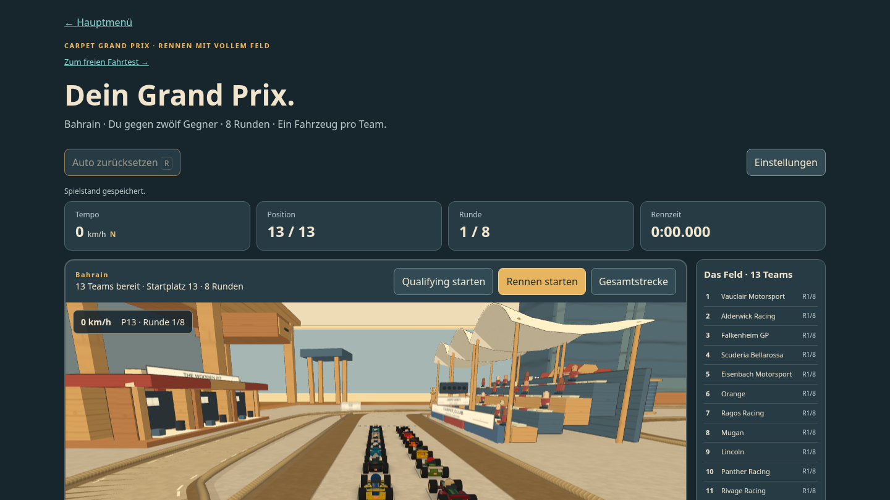
Tatsächliche Browseraufnahme · keine Konzeptgrafik
Nachher · Desktop 16:9
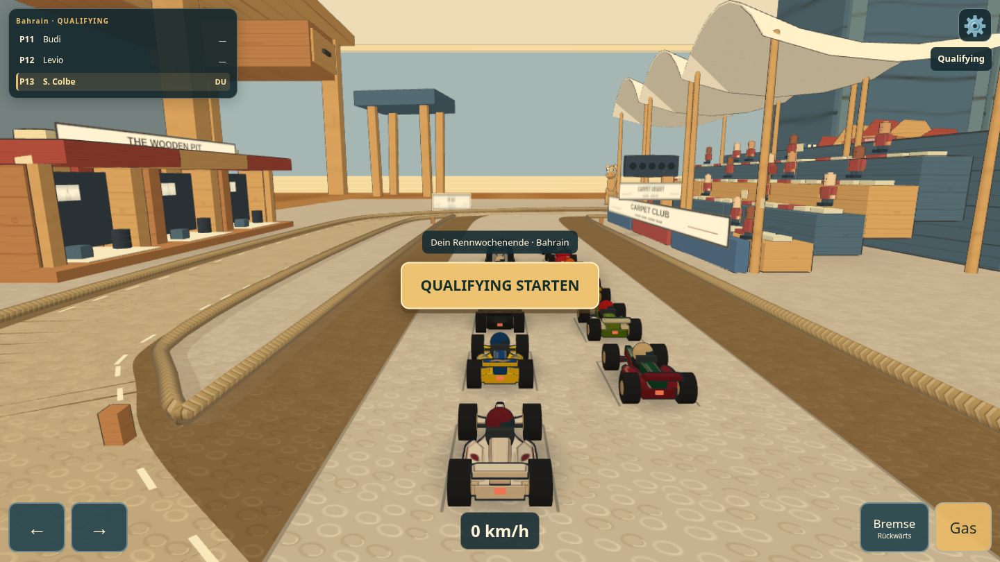
Tatsächliche Browseraufnahme · keine Konzeptgrafik
Vorher · Hochformat
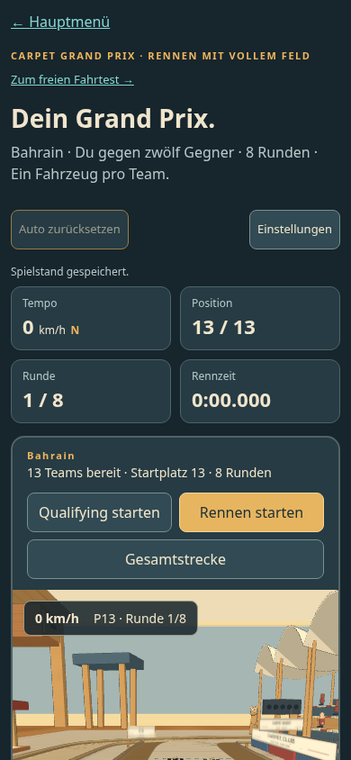
Tatsächliche Browseraufnahme · keine Konzeptgrafik
Nachher · 390 × 844, Touch-Emulation
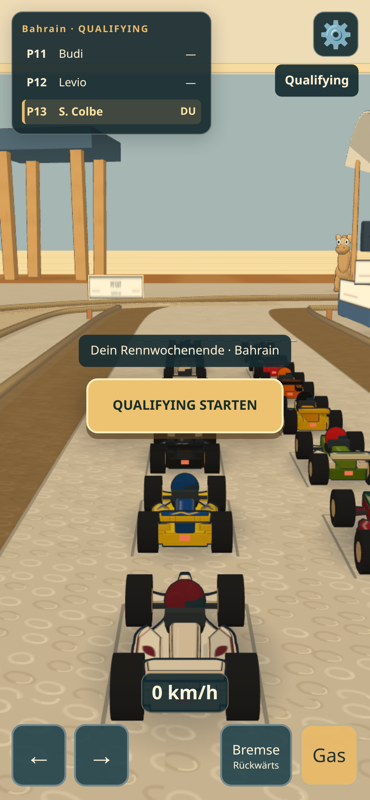
Tatsächliche Browseraufnahme · keine Konzeptgrafik
844 × 390, Touch-Emulation
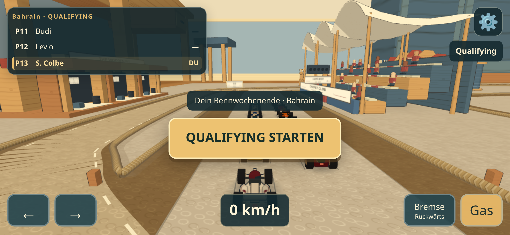
Tatsächliche Browseraufnahme · keine Konzeptgrafik
320 × 568, Touch-Emulation
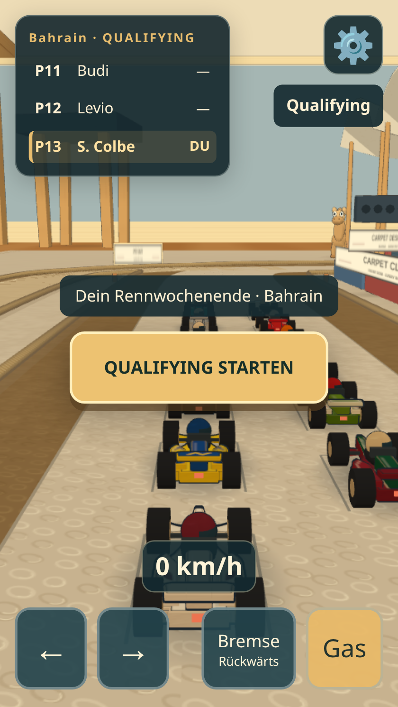
Tatsächliche Browseraufnahme · keine Konzeptgrafik
Pausiertes vollständiges Klassement
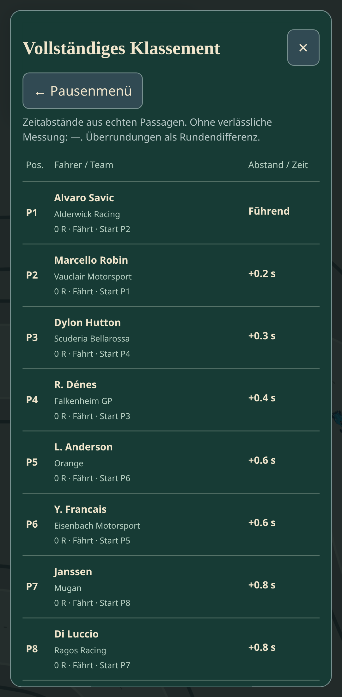
Tatsächliche Browseraufnahme · keine Konzeptgrafik
Qualifying-Klassement
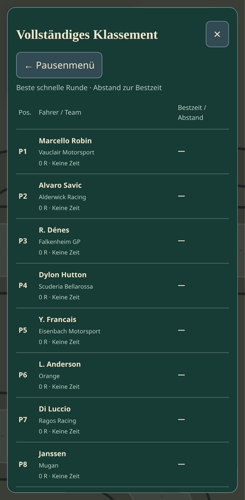
Tatsächliche Browseraufnahme · keine Konzeptgrafik
Kampagnenübersicht und nächste Strecke
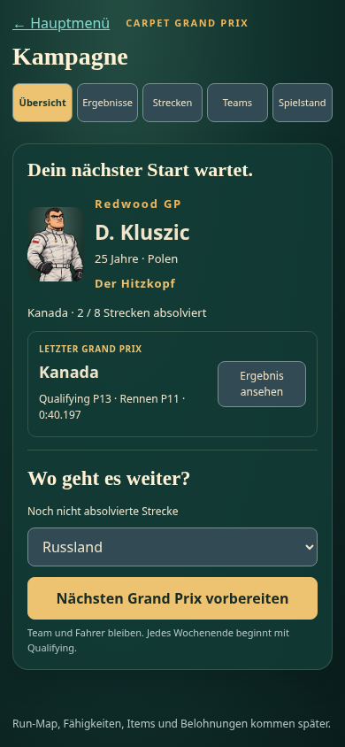
Tatsächliche Browseraufnahme · keine Konzeptgrafik
Gespeicherte Grand Prix
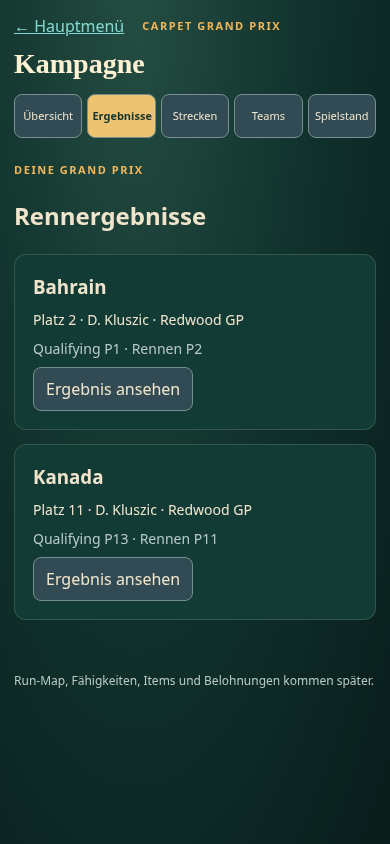
Tatsächliche Browseraufnahme · keine Konzeptgrafik
Historisches Rennergebnis
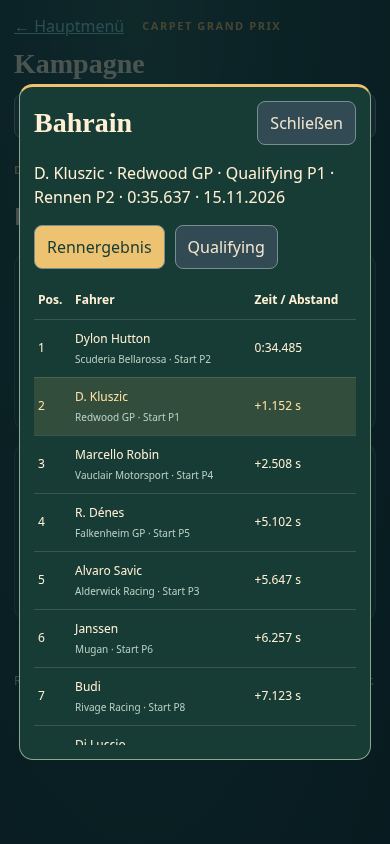
Tatsächliche Browseraufnahme · keine Konzeptgrafik
Historisches Qualifying
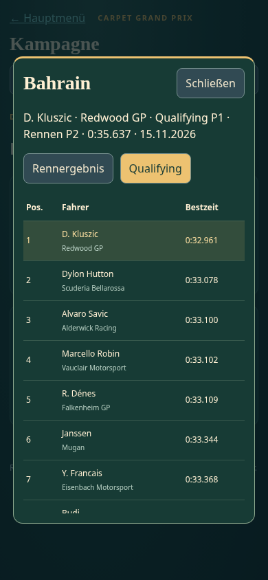
Tatsächliche Browseraufnahme · keine Konzeptgrafik
Tatsächlicher Zieleinlauf
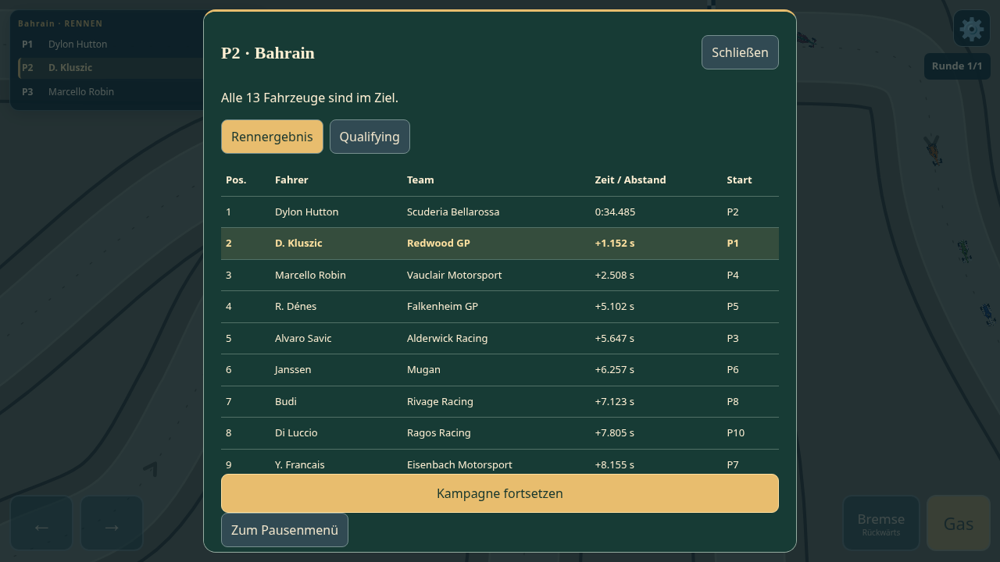
Tatsächliche Browseraufnahme · keine Konzeptgrafik